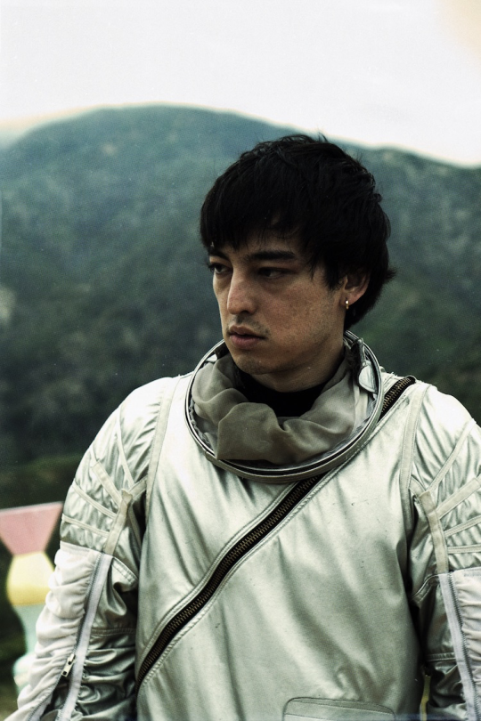

Joji Joji Joji Joji Joji Joji Joji Joji Joji Joji Joji Joji Joji Joji Joji Joji Joji Joji Joji Joji Joji Joji Joji Joji Joji Joji Joji Joji Joji Joji Joji Joji Joji Joji Joji Joji Joji Joji Joji Joji Joji Joji Joji Joji Joji Joji Joji Joji Joji Joji Joji Joji Joji Joji Joji Joji Joji Joji Joji Joji Joji Joji Joji Joji Joji Joji Joji Joji Joji Joji Joji Joji Joji Joji Joji Joji Joji Joji Joji Joji Joji Joji Joji Joji Joji Joji Joji Joji Joji Joji Joji Joji Joji Joji Joji Joji Joji Joji Joji Joji Joji Joji Joji Joji Joji Joji Joji Joji Joji Joji Joji Joji Joji Joji Joji Joji Joji Joji Joji Joji Joji Joji Joji Joji Joji Joji Joji Joji Joji Joji Joji Joji Joji Joji Joji Joji Joji Joji Joji Joji Joji Joji Joji Joji Joji Joji Joji Joji Joji Joji Joji Joji Joji Joji Joji Joji Joji Joji Joji Joji Joji Joji Joji Joji Joji Joji Joji Joji Joji Joji Joji Joji Joji Joji Joji Joji Joji Joji Joji Joji Joji Joji Joji Joji Joji Joji Joji Joji Joji Joji Joji Joji Joji Joji Joji Joji Joji Joji Joji Joji Joji Joji Joji Joji Joji Joji Joji Joji Joji Joji Joji Joji Joji Joji Joji Joji Joji Joji Joji Joji Joji Joji Joji Joji Joji Joji Joji Joji Joji Joji Joji Joji Joji Joji Joji Joji Joji Joji Joji Joji Joji Joji Joji Joji Joji Joji Joji Joji Joji Joji Joji Joji Joji Joji Joji Joji Joji Joji Joji Joji Joji Joji Joji Joji Joji Joji Joji Joji Joji Joji Joji Joji Joji Joji Joji Joji Joji Joji Joji Joji Joji Joji Joji Joji Joji Joji Joji Joji Joji Joji Joji Joji Joji Joji Joji Joji Joji Joji Joji Joji Joji Joji Joji Joji Joji Joji Joji Joji Joji Joji Joji Joji Joji Joji Joji Joji Joji Joji Joji Joji Joji Joji Joji Joji Joji Joji Joji Joji Joji Joji Joji Joji Joji Joji Joji Joji Joji Joji Joji Joji Joji Joji Joji Joji Joji Joji Joji Joji Joji Joji Joji Joji Joji Joji Joji Joji Joji Joji Joji Joji Joji Joji Joji Joji Joji Joji Joji Joji Joji Joji Joji Joji Joji Joji Joji Joji Joji Joji Joji Joji Joji Joji Joji Joji Joji Joji Joji Joji Joji Joji Joji Joji Joji Joji Joji Joji Joji Joji Joji Joji Joji Joji Joji Joji Joji Joji Joji Joji Joji Joji Joji Joji Joji Joji Joji Joji Joji Joji Joji Joji Joji Joji Joji Joji Joji Joji Joji Joji Joji Joji Joji Joji Joji Joji Joji Joji Joji Joji Joji Joji Joji Joji Joji Joji Joji Joji Joji Joji Joji Joji Joji Joji Joji Joji Joji Joji Joji Joji Joji
Slow Dancing in the Dark is a song about heartbreak in the form of betrayal and self sabotage. This song paints a picture of how hard love can be and how your mentality can effect the other person.
I don't want a friend (just me)
I want my life in two
(my life in two)
Just one more night
Waiting to get there
Waiting for you
(all night)
I'm done fighting all night
(waiting for you)
When I'm around slow dancing in the dark
Don't follow me, you'll end up in my arms
You have made up your mind
I don't need no more signs
Can you?
Can you?
Give me reasons we should be complete
You should be with him, I can't compete
You looked at me like
I was someone else, oh well
Can't you see? (Can't you see?)
I don't wanna slow dance
(I don't want to slow dance)
In the dark
Dark
When you gotta run
Just hear my voice in you
(my voice in you)
Shutting me out of you
(shutting me out of you)
Doing so great (so great, so great)
You
Used to be the one
(used to be the one)
To hold you when you fall
Yeah, yeah, yeah
(when you fall, when you fall)
I don't mess with your tone
(I don't mess with your tone)
I don't wanna go home
(I don't wanna go home)
Can it be one night?
Can you?
Can you?
Give me reasons we should
be complete
You should be with him,
I can't compete
You looked at me like
I was someone else, oh well
Can't you see?
I don't wanna slow dance
(I don't want to slow dance)
In the dark
Dark
In the dark
Dark